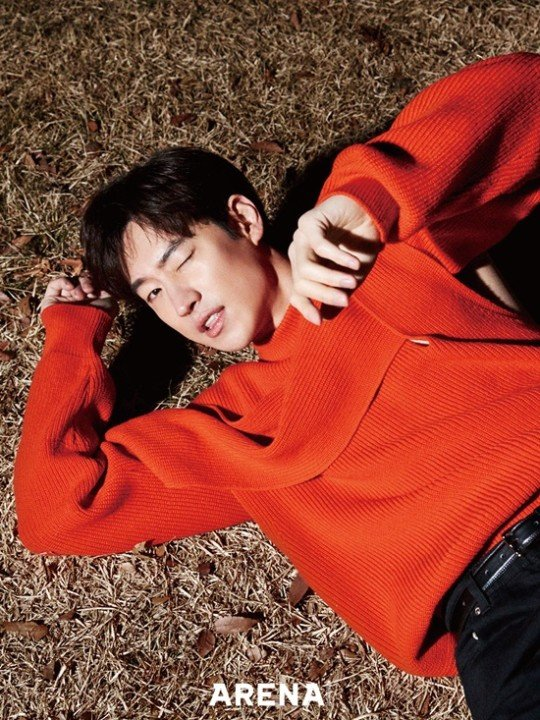

이 제 훈

대한민국의 배우. 1984년 7월 4일 서울특별시 종로구 효자동에서 태어났으며, 6살 때부터 의정부시에서 살았다. 어려서 연극영화과를 가려 했지만, 부모님의 반대로 고려대학교 세종캠퍼스에 입학하여 공학도의 길을 걸었다. 하지만 연기자의 꿈을 접지 못하고 2학년 때 그만둔 후, 2008년 한국예술종합학교 연극원 연기과에 입학했다.[3]
2005년 연극 《바다제비》를 통해 배우의 생활을 시작했고 공식 데뷔작은 2007년 《밤은 그들만의 시간》(첫 단편) or 2008년 《약탈자들》(첫 장편) [4] 이다. 줄곧 단역과 독립영화계를 기웃거리다 2009년 《친구사이?》, 2010년 《김종욱 찾기》, 2010년 《세 자매》의 출연으로 연기력을 다졌고, 2010년 《파수꾼》과 2011년 《고지전》으로 자신의 존재를 충무로에 각인시켰다.
2011년은 이제훈의 필모그래피를 완전히 뒤바꾼 해이다. 파수꾼과 고지전으로 연이어 주목받으면서[5] 그 해 영화제의 신인상이란 신인상은 전부 이제훈으로 대동단결... 파수꾼 이제훈과 고지전 이제훈이 경합을 벌이는 상황까지 발생했다. 후보자 화면 두 칸을 차지한 이제훈의 뻘쭘한 미소가 포인트. 참고로 대종상과 청룡영화제에서는 파수꾼으로, 부일영화상과 영평상에서는 고지전으로 신인남우상을 거머쥐었다. 그야말로 충무로의 신데렐라라고 해도 과언이 아닐 정도. 이후로도 이제훈만큼의 임팩트를 남기며 스크린에 등장한 신인 남자배우는 찾아보기 어렵다.
2012년 영화 건축학개론으로 유명세를 타며 자리를 확고히 했다. 10살이나 어린 수지와 거의 동갑처럼 보일 만큼 어려 보이는 얼굴에첫사랑에 걸맞는 풋풋한 연기로 대호평을 받았다. 이후 분노의 윤리학, 점쟁이들, 파파로티 등의 작품을 연이어 촬영하고는 군입대를... 많은 작품을 찍어놓고 간 탓에 그가 의경복무를 시작한 후 한참이나 그가 입대한 사실을 모르는 사람들이 많았다. 제대 후 첫 영화인 탐정 홍길동으로 복귀해 143만명 관객을 모았지만 손익분기점인 300만명 동원에는 실패했다.
2016년 드라마 시그널에서 주인공 박해영 역을 맡아 열연했는데, 사실 초반에는 연기력에 대한 비판이 있었다. 목소리와 연기 톤이 과장되고 어색해서 캐릭터의 성향을 잘 소화하지 못하고 있다는 것. 반면 톤이 맞지 않는 등 연기력에 있어 논란의 여지가 있다는 것은 소수의 의견이라는 주장도 있었다. 논란 당시 얼굴책 같은데서 도막영상을 올려놓고 평가를 하는 경우가 보였는데, 앞뒤 전개흐름의 맥락을 무시한 채 격앙된 감정신만 오려낸 상태에서의 평가 또한 문제의 소지가 있다. 다행히도 드라마 후반부에는 연기력 논란이 거의 사라졌다. 이후의 인터뷰를 보면 프로파일러라는
직업을 표현하려는 모습과 초반분량에서 후시녹음으로 대체되면서 결과적으로 어색하게 조금 겉도는 느낌이 되었다고 한다.# 하지만 초반 이후 사연있는 프로파일러 박해영 역을 잘 소화해내 논란을 떨쳐내고 호평을 받았다.